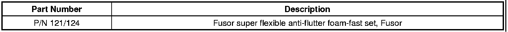
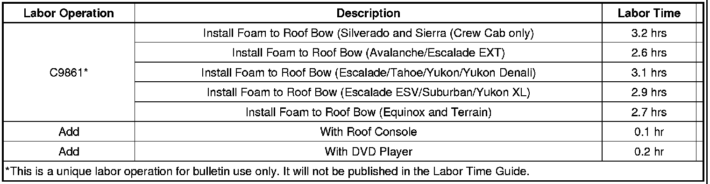

Body - Roof Panel Flutters/Rattle Noise When Doors Close
TECHNICALBulletin No.: 08-08-67-016H
Date: January 20, 2012
Subject: Roof Panel Flutters or Rattle Noise from Roof or Headliner when Closing Doors (Apply Foam)
Models:
2007-2009 Cadillac Escalade, Escalade ESV, Escalade EXT
2007-2009 Chevrolet Avalanche, Silverado (Crew Cab Models Only), Suburban, Tahoe
2010-2012 Chevrolet Equinox
2007-2009 GMC Sierra (Crew Cab Models Only), Yukon, Yukon Denali, Yukon XL, Yukon Denali XL
2010-2012 GMC Terrain
Supercede:
This bulletin is being revised to update model years. Please discard Corporate Bulletin Number 08-08-67-016G (Section 08 - Body and Accessories).
Condition
Some customers may comment that the roof panel flutters and/or there is a rattle noise from the roof or headliner when closing one of the side doors or the liftgate.
Cause
This may be caused by the excessive motion of the roof panel. On initial inspection, you may notice that the roof panel expansion adhesive material has separated between the roof and the roof bow. The concern is seen mostly on the first cross bow.
Correction
Lower the headliner assembly (it is not usually necessary to remove the headliner from the vehicle) to gain access to the roof bows. Refer to Headlining Trim Panel Replacement in SI.
Remove any loose foam from the roof bow or bows. Apply Fusor super flexible anti-flutter foam-fast set, Fusor P/N 121/124, or equivalent, in a continuous bead the entire length between the roof bow reinforcement and the roof outer panel.
Reinstall the headliner. Refer to Headlining Trim Panel Replacement in SI.
Parts Information
Contact Lord Fusor at 1-877-275-5673 or on the Web at www.lord.com.

Warranty Information

For vehicles repaired under warranty, use the table.

Disclaimer